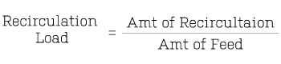
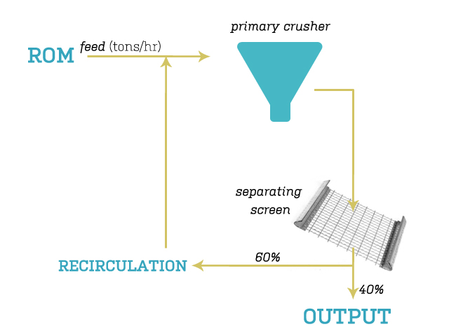
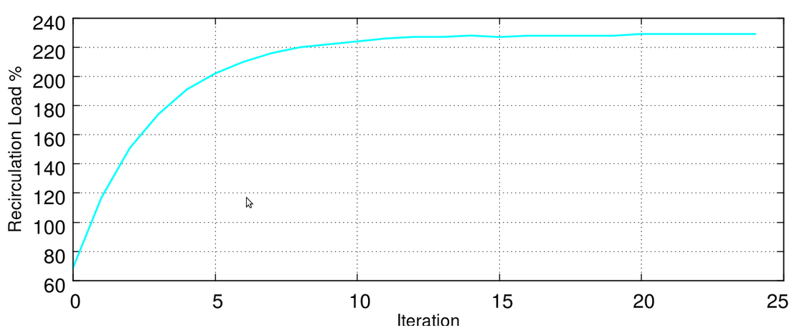
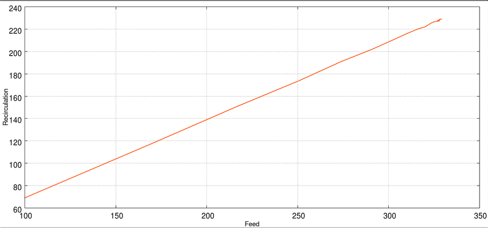

Recirculation Load is defined as the ratio of the amount of recirculation from crusher to the amount of feed.
The feed is constant
(for ex. 100 tons/hr).
In computing the Recirculating load, the new feed in every iteration is the sum of constant feed and recirculation.
The output of the primary crusher is passed through a filtering screen that segregates the over-sized and under-sized particles.
The over-sized particles are recirculated back to the feed.


Figure. Crusher Circuit Flow Diagram
Following is a script in C to iterate the flow and calculate the recirculation load in each iteration.
/*
:: Simulator for Crusher Circulation ::
Pranjal Goswami
10CH10030
*/
#include<stdio.h>
#include<stdlib.h>
#include<math.h>
#include<time.h>
#define SCREEN_RATIO_PIVOT 60
#define RANGE 1 /* <delta> x in percentage*/
double getRatio(); // returns SCREEN_RATIO_PIVOT +/- RANGE %
void main()
{
int rom; // Run of mines - input in inches
int feed; // Feed Rate - input in units per hour to primary crusher
double screen_ratio; // Screen Oversize : Undersize Ratio - pivots about SCREEN_RATIO_PIVOT <delta>x < RANGE;
int i;
int new_feed;
int recirculation;
double recirculation_load;
double avg_recirculation_load;
srand(time(NULL)); // Randomizing seed
//scanf("%d",&feed);
feed=100;
new_feed=feed;
for(i=0;i<50;i++)
{
screen_ratio = getRatio();
recirculation = (int)new_feed*screen_ratio;
recirculation_load = (double) recirculation/feed*100;
printf("%d %d %d %d %.2lf\n",i,new_feed,recirculation,new_feed-recirculation,recirculation_load);
new_feed = feed + recirculation;
}
}
double getRatio()
{
double c;
int sign;
c=(double)rand()/RAND_MAX;
c=c*RANGE;
sign = (int)c%2?1:-1;
c=SCREEN_RATIO_PIVOT+c*sign;
return c/100.0;
}
Output All in tons/hour
| Iteration |
Feed |
Recirculation |
Output |
Recirculation Load % |
| 0 | 100 | 69 | 31 | 69% |
| 1 | 169 | 117 | 52 | 117.00% |
| 2 | 217 | 150 | 67 | 150.00% |
| 3 | 250 | 174 | 76 | 174.00% |
| 4 | 274 | 190 | 84 | 190.00% |
| 5 | 290 | 202 | 88 | 202.00% |
| 6 | 302 | 210 | 92 | 210.00% |
| 7 | 310 | 216 | 94 | 216.00% |
| 8 | 316 | 220 | 96 | 220.00% |
| 9 | 320 | 223 | 97 | 223.00% |
| 10 | 323 | 225 | 98 | 225.00% |
| 11 | 325 | 227 | 98 | 227.00% |
| 12 | 327 | 228 | 99 | 228.00% |
| 13 | 328 | 227 | 101 | 227.00% |
| 14 | 327 | 228 | 99 | 228.00% |
| 15 | 328 | 228 | 100 | 228.00% |
| 16 | 328 | 228 | 100 | 228.00% |
| 17 | 328 | 228 | 100 | 228.00% |
| 18 | 328 | 229 | 99 | 229.00% |
| 19 | 329 | 229 | 100 | 229.00% |
| 20 | 329 | 230 | 99 | 230.00% |
| 21 | 330 | 229 | 101 | 229.00% |
| 22 | 329 | 228 | 101 | 228.00% |
| 23 | 328 | 229 | 99 | 229.00% |
| 24 | 329 | 229 | 100 | 229.00% |
Observation : Assuming the screen ration to 70%
(according to practical values) and a fluctuation of ±1%, it is observerd that in steady state the
Recirculation Load is nearly 230%.

Figure. Graph : No. of Iteration versus Recirculation Load

Figure. Graph : Feed versus Recirculation